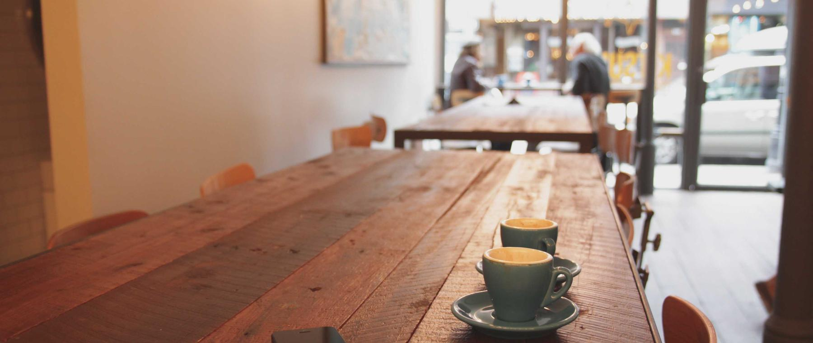

Kancelaria Adwokacka · Częstochowa
Adwokat, który stoi po Twojej stronie.
Sprawy rodzinne, cywilne, spadkowe i karne. Kancelaria przy ul. Kilińskiego, w której każdą sprawę prowadzę osobiście.
wpis na listę adwokatów przy Okręgowej Radzie Adwokackiej w Częstochowie
od pierwszej rozmowy do zakończenia postępowania
po wcześniejszym umówieniu telefonicznym
Nie wiesz, czy to sprawa dla adwokata?
Poniżej sytuacje, z którymi ludzie przychodzą do mnie najczęściej. Jeśli któraś brzmi znajomo, zadzwoń.
Zakres spraw
W czym mogę pomóc
Osiem obszarów, w których prowadzę sprawy przed sądami i urzędami. Trzy pierwsze to codzienność kancelarii.
Prawo rodzinne
Rozwód, separacja, opieka nad dziećmi i podział wspólnego majątku. Sprawy, w których liczy się nie tylko wyrok, ale i to, jak się rozmawia.
Prawo cywilne
Nieruchomości, umowy i spory, które trafiły już do sądu albo dopiero mogą tam trafić. Zaczynamy od tego, co da się załatwić bez procesu.
Prawo spadkowe
Od stwierdzenia nabycia spadku po zachowek i podział majątku między spadkobierców. Także wtedy, gdy rodzina nie rozmawia ze sobą od lat.
Beata Cupiał-Kowalska, adwokat
Jestem absolwentką Wydziału Prawa i Administracji Uniwersytetu Łódzkiego. Pracę magisterską z postępowania cywilnego obroniłam w 2013 roku, a od 2014 do 2016 roku odbywałam aplikację adwokacką przy Okręgowej Radzie Adwokackiej w Częstochowie.
Pracuję z osobami, które często po raz pierwszy mają do czynienia z sądem albo urzędem. Dlatego tłumaczę każdy krok zwykłym językiem i mówię wprost, jakie są szanse, ile to potrwa i ile będzie kosztować.
Dyplom Wydziału Prawa i Administracji Uniwersytetu Łódzkiego.
Aplikacja adwokacka przy Okręgowej Radzie Adwokackiej w Częstochowie.
Egzamin adwokacki i wpis na listę adwokatów.
Własna kancelaria w centrum Częstochowy, przy ul. Kilińskiego.
Bronię Ciebie, kiedy czujesz się bezsilny. Hasło kancelarii

Kancelaria mieści się w lewej oficynie, na pierwszym piętrze, po prawej stronie. Docelowo zdjęcie wejścia do budynku, żeby łatwiej było trafić.
Jak wygląda współpraca
Zanim cokolwiek zaczniemy, wiesz, czym się zajmę, ile to potrwa i na jakich zasadach się rozliczamy.
Telefon albo wiadomość
Opowiadasz w kilku zdaniach, co się dzieje. Ustalamy termin spotkania w kancelarii albo rozmowy telefonicznej.
Spotkanie
Przeglądam dokumenty, zadaję pytania i mówię, jakie są możliwości oraz terminy, których trzeba pilnować.
Zakres i honorarium
Ustalamy na piśmie, czym się zajmuję i na jakich zasadach się rozliczamy, zanim zacznę pracę.
Prowadzenie sprawy
Dostajesz informację po każdym istotnym kroku. Nie musisz dopytywać, co się dzieje.
Pytania, które słyszę najczęściej
Nie znalazłeś swojego pytania? Zadzwoń, odpowiem od razu.
534 477 596Czy muszę wcześniej umówić spotkanie?
Jak trafić do kancelarii?
Czy mogę spotkać się poza godzinami pracy?
Co przygotować na pierwsze spotkanie?
Ile kosztuje pierwsza rozmowa?
Porozmawiajmy o Twojej sprawie
Zadzwoń albo napisz. Powiem, czy i jak mogę pomóc oraz co warto zrobić w pierwszej kolejności. Pierwsza rozmowa niczego nie przesądza.
Kontakt
Kancelaria przy Kilińskiego
Adres
ul. Kilińskiego 5 lok. 4
42-202 Częstochowa
Lewa oficyna, pierwsze piętro, po prawej stronie.
Telefon i e-mail
Proszę o wcześniejszy telefon: część czynności wykonuję poza siedzibą kancelarii.
Godziny
| Poniedziałek | 8:30 do 17:00 |
| Wtorek | 8:30 do 17:00 |
| Środa | 8:30 do 15:00 |
| Czwartek | 8:30 do 15:00 |
| Piątek | po umówieniu |
Spotkanie poza godzinami pracy jest możliwe po uzgodnieniu.